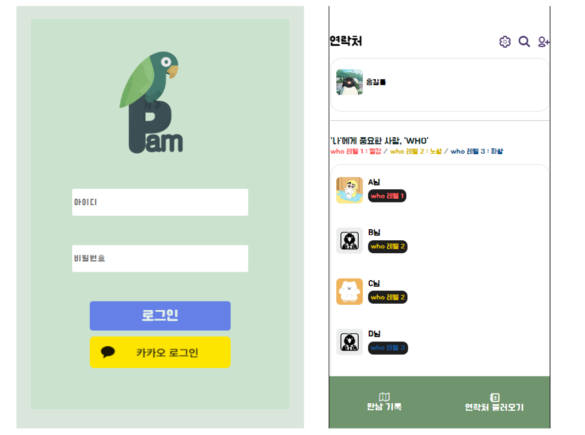

<!DOCTYPE html>
<html lang="ko">

<head>
  <meta charset="UTF-8">
  <meta http-equiv="X-UA-Compatible" content="IE=edge">
  <meta name="viewport" content="width=device-width, initial-scale=1.0">
  <title>vCard - Personal Portfolio</title>

  <!--
    - favicon
  -->
  <link rel="shortcut icon" href="./assets/images/logo.ico" type="image/x-icon">

  <!--
    - custom css link
  -->
  <link rel="stylesheet" href="./assets/css/style.css">
</head>

<body>

  <!--
    - #MAIN
  -->

  <main>

    <!--
      - #SIDEBAR
    -->

    <aside class="sidebar" data-sidebar>

      <div class="sidebar-info">

        <figure class="my-photo-box">
          
        </figure>

        <div class="info-content">
          <h1 class="name" title="서혜경">서혜경</h1>
          <p class="title" style="font-weight: bold; font-size: 15px;">웹 개발 교육 과정 참여</p>
          <p class="title" style="font-weight: bold; font-size: 15px;">프로젝트에서 안드로이드 앱 개발중</p>
        </div>

        <button class="info_more-btn" data-sidebar-btn>
          <span>연락처 보기</span>

          <ion-icon name="chevron-down"></ion-icon>
        </button>

      </div>

      <div class="sidebar-info_more">

        <div class="separator"></div>

        <ul class="contacts-list">

          <li class="contact-item">

            <div class="icon-box">
              <ion-icon name="mail-outline"></ion-icon>
            </div>

            <div class="contact-info">
              <p class="contact-title">Email</p>

              <a href="mailto:hyegyeongseo111@gmail.com" class="contact-link">hyegyeongseo111@gmail.com</a>
            </div>

          </li>

          <li class="contact-item">

            <div class="icon-box">
              <ion-icon name="phone-portrait-outline"></ion-icon>
            </div>

            <div class="contact-info">
              <p class="contact-title">Phone</p>

              <a href="tel:010-2874-7277" class="contact-link">010-2874-7277</a>
            </div>

          </li>

          <li class="contact-item">

            <div class="icon-box">
              <ion-icon name="calendar-outline"></ion-icon>
            </div>

            <div class="contact-info">
              <p class="contact-title">Birthday</p>

              <time datetime="1998-11-16">November 16, 1998</time>
            </div>

          </li>

          <li class="contact-item">

            <div class="icon-box">
              <ion-icon name="location-outline"></ion-icon>
            </div>

            <div class="contact-info">
              <p class="contact-title">Location</p>

              <address>경기도 고양시 화정동</address>
            </div>

          </li>

        </ul>

    </aside>


    <!--
      - #main-content
    -->

    <div class="main-content">

 
      <!--
        - #ABOUT
      -->

      <article class="about  active" data-page="about">

        <header>
          <h2 class="h2 article-title">About me</h2>
        </header>

        <section class="about-text">
          <p>
            클라우드 기반 MSA SW 고급 개발자 양성 과정을 통해, 아래와 같은 배움의 기회를 얻었습니다. + 3개의 프로젝트 참여.
          </p>
          <p><a style="color: #fff200; display: inline;">"HTML,CSS,JS"</a>로 프론트 관련 기초 학습</p>
          <p><span style="color: #fff200;display: inline;">"Java"</span>를 학습하고 <span style="color: #fff200;display: inline;">Spring Boot</span> 수업 과정에서 <span style="color: #fff200;display: inline;">MySQL DB, MVC 패턴</span> 사용</p>
          <p><span style="color: #fff200;display: inline;">인공지능</span>에 대한 기본 원리 이해</p>
          <p>Ubuntu를 설치한 VMware로 리눅스 관련 학습 + Ubuntu 환경에서 <span style="color: #fff200;display: inline;">"도커, 리눅스"</span> 명령어 사용 및 윈도우 도커 데스크탑 체험</p>
          <p><span style="color: #fff200;display: inline;">AWS</span>로 EC2를 활용한 웹 서비스 <span style="color: #fff200;display: inline;">환경 구축 및 배포</span></p>
        </section>


        <!--
          - service
        -->

        <section class="service">

          <h3 class="h3 service-title">What i'm doing</h3>

          <ul class="service-list">

            <li class="service-item">

              <div class="service-icon-box">
                
              </div>

              <div class="service-content-box">
                <h4 class="h4 service-item-title">Web design</h4>

                <p class="service-item-text">
                  HTML 파일, JSP 파일에 css를 적용하여 웹 페이지를 디자인합니다.
                </p>
              </div>

            </li>

            <li class="service-item">

              <div class="service-icon-box">
                
              </div>

              <div class="service-content-box">
                <h4 class="h4 service-item-title">Web development</h4>

                <p class="service-item-text">
                  언어는 자바</p>
                <p class="service-item-text">Spring Boot 프로젝트 생성</p>
                <p class="service-item-text"> - MVC 패턴으로 Mybatis, MySQL DB를 활용합니다.</p>
              </div>

            </li>

            <li class="service-item">

              <div class="service-icon-box">
                
              </div>

              <div class="service-content-box">
                <h4 class="h4 service-item-title">Mobile apps</h4>

                <p class="service-item-text">
                  안드로이드 스튜디오에서 작업 - 안드로이드 앱 개발.
                </p>
                <p class="service-item-text">구글에서 권장하는 코틀린으로 결과물을 제작하고 있습니다.</p>
              </div>

            </li>

            <li class="service-item">

              <div class="service-icon-box">
                
              </div>

              <div class="service-content-box">
                <h4 class="h4 service-item-title">Cloud</h4>

                <p class="service-item-text">
                  교육 과정에서 AWS를 배우고, 멘토링을 통해 현재 참여 중인 프로젝트에서 Azure를 사용중입니다.
                </p>
              </div>

            </li>

          </ul>

        </section>

      </article>


      <!--
        - #PORTFOLIO
      -->

      <article class="portfolio" data-page="portfolio">

        <header>
          <h2 class="h2 article-title">Portfolio</h2>
        </header>

        <section class="projects">

          <ul class="project-list">

            <li class="project-item  active" data-filter-item data-category="web development">
              <a href="https://docs.google.com/presentation/d/1nldeyCZj9oKl-d9V3UexpB_3ts590PeS/edit?usp=drive_link&ouid=113666383471605664834&rtpof=true&sd=true">

                <figure class="project-img">
                  <div class="project-item-icon-box">
                    <ion-icon name="eye-outline"></ion-icon>
                  </div>

                  
                </figure>

                <h3 class="project-title">첫 번째 프로젝트 [강남구 맛집 사이트 - 가보자고]</h3>

                <p class="project-category">프로젝트 내용: 강남구 내의 맛집 정보 제공 및 커뮤니티 공간 제공</p>
                <p class="project-category">맡은 역할: 프론트와 백엔드</p>
                <p class="project-category"> JSP 파일로 Header와 Footer 부분 제작, 상세 페이지 맡음. 상세 페이지에 Bootstrap 캐러셀 적용, 댓글 페이지 디자인, 카카오 API는 팀장 맡으신 분이 사용.</p>
              </a>
            </li>

            <li class="project-item  active" data-filter-item data-category="web development">
              <a href="https://incredible-pavlova-589869.netlify.app">

                <figure class="project-img">
                  <div class="project-item-icon-box">
                    <ion-icon name="eye-outline"></ion-icon>
                  </div>

                  
                </figure>

                <h3 class="project-title">두 번째 프로젝트 [아동 학습을 위한 Quick Draw DataSet 활용]</h3>

                <p class="project-category">프로젝트 내용: 손그림을 통한 사물 학습과 TTS를 활용한 영어 공부</p>
                <p class="project-category">맡은 역할: 기획, 프론트엔드, 자바스크립트를 통한 TTS API 활용</p>
                <p class="project-category"> Quick Draw에서 제공하는 데이터셋을 활용하여 손그림을 예측하는 인공지능 모델을 구현하고, TTS를 통해 예측한 사물의 영어 음성을 들을 수 있게 제작</p>

              </a>
            </li>

            <li class="project-item  active" data-filter-item data-category="web design">
              <a href="#">

                <figure class="project-img">
                  <div class="project-item-icon-box">
                    <ion-icon name="eye-outline"></ion-icon>
                  </div>

                  
                </figure>

                <h3 class="project-title">최종 프로젝트 PAM</h3>

                <p class="project-category">맡은 역할: 팀장, 프론트엔드, API와 아키텍처 설계</p>
                <p class="project-category">PAM 프로젝트의 기존 제안서에는 인적자산, 물적자산, 부동산, 금융 등의 개인 자산 통합 관리 서비스를 만드는 것이었으나, 이번 프로젝트에서는 그 중 일부인 인적자산에 초점을 맞추어 진행.</p>
                <p class="project-category">서비스 제공을 위해 정보 수집의 필요성, 사용자의 접근 용이성이 커서 앱으로 진행하게 되었습니다.</p>
              </a>
            </li>

          </ul>

        </section>

      </article>

    </div>

  </main>


  <!--
    - custom js link
  -->
  <script src="./assets/js/script.js"></script>

  <!--
    - ionicon link
  -->
  <script type="module" src="https://unpkg.com/ionicons@5.5.2/dist/ionicons/ionicons.esm.js"></script>
  <script nomodule src="https://unpkg.com/ionicons@5.5.2/dist/ionicons/ionicons.js"></script>

</body>

</html>